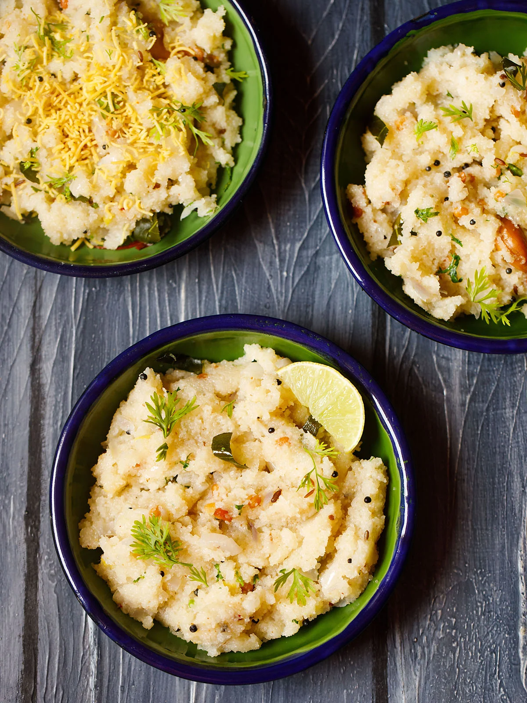

Upma

Upma is a popular South Indian breakfast made with cream of wheat or semolina flour (called rava or suji locally), veggies, spices and herbs.
About Upma Recipe
Upma is a flavorful, tasty, savory and popular South Indian breakfast that is made with cream of wheat or semolina flour (called rava or suji), a few lentils, nuts, vegetables, herbs and spices.
This traditional dish involves cooking roasted rava in water that has been flavored by ghee (or oil), cashews, urad dal (white lentils), chana dal (husked and split bengal gram), onion, ginger and additional herbs and spices. Sugar can be added for a mildly sweet and savory dish.
Ingredients
- rava
- Ghee (clarified butter) or oil
- mustard seeds
- cumin seeds
- chana dal (split and husked bengal gram)
- urad dal (split and husked black gram)
- 5 cashews - optional
- onions - finely chopped or 1 medium-sized onion
- green chilli - chopped or 1 green chilli
- ginger - finely chopped or 1 inch ginger
- sprig curry leaves or 10 to 12 curry leaves
- water
- salt as required
- sugar or add as required, optional
- coriander leaves - chopped (cilantro)
Instructions
Preparation
- Finely chop 1 medium sized onion, 1 to 2 green chillies and 1 inch ginger and some coriander leaves.
- Also set aside the remaining ingredients.
Roasting rava
- Heat a pan or kadai first. Add rava or cream of wheat.
- Begin to roast the rava. Stir often while roasting the rava.
- The rava or sooji grains should become fragrant and start to look dry, separate and crisp. Don’t brown the rava.
- Switch off the flame and then add the roasted rava in a plate and keep aside.
Frying and sautéing
- In a pan, heat ghee or oil. add the mustard seeds.
- When you hear the crackling sound of mustard seeds, it means they are getting fried.
- Now add the cumin seeds along with chana dal and urad dal.
- Fry till they begin to brown a bit or get lightly golden
- Immediately add cashews and begin to fry. By the time, the cashews get golden the lentils will also get golden.
- Now add the finely chopped onions. Saute the onions till they become translucent.
- Then add the chopped green chilly, ginger, curry leaves. Sauté for a few seconds. You can also add 1 dried red chilli at this step.
Boiling water
- Then add 2.5 cups water, sugar and salt as required. Mix well and check the taste of water. It should be a bit salty but not too much.
- Sugar is optional and you can skip it.
- On a medium to high flame, heat the water and let it come to a rolling boiling.
Making upma
- When the water comes to a rolling boil, lower the flame to its lowest. Then add the rava in 4 to 5 batches with a spoon.
- Once you add the rava, mix and stir immediately. The entire batch of rava should get mixed with the water evenly. Then add the next batch of roasted rava. Mix and stir again.
- This way keep on adding and stirring the rava up to the last batch.
- Quickly stir and mix well. The rava grains absorb water and thus swell and get cooked.
- Cover and allow the rava upma to steam for 2 to 3 minutes on a low heat.
- Then switch off the flame. Here the rava is cooked and the upma is ready.
- Lastly add chopped coriander leaves. Mix again.
- Serve upma with coconut chutney or lime slices or lime pickle.
Home